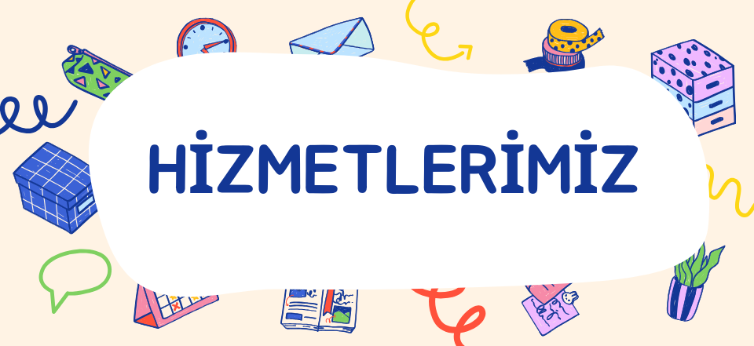

Hizmetlerimiz
- Konuşma ve Dil Gelişimi
- Fiziksel Aktivite ve Oyun
- Sosyal Etkileşim ve Oyun
- Duyusal Oyun Alanları
- Ebeveyn Danışmanlığı ve Eğitimi
Kullanılan Yöntemler
- Dahil Etme: Tüm çocukların birlikte oynayabileceği, kapsayıcı oyun alanları sunuyoruz.
- Kaynaştırma: Çocukların belirli etkinliklerde diğer çocuklarla birlikte oynamasını sağlıyoruz.
- Ayrıştırma: Çocuklar için özel oyun alanları ve etkinlikler düzenliyoruz.
Kapsayıcı Oyun Alanlarının Özellikleri
~ Erişilebilir Yollar ve Rotalar: Çocuklar için güvenli ve erişilebilir yollar.
~ Erişilebilir Oyun Ekipmanları: Tüm çocukların kullanabileceği oyun ekipmanları.
~ Dinlenme ve Gölgelik Alanlar: Çocukların dinlenebileceği ve gölgede vakit geçirebileceği alanlar.
~ Alıştırma Oyunları: Çocukların fiziksel becerilerini geliştirmelerine yardımcı olan oyunlar.
~ Sembolik Oyunlar: Çocukların hayal güçlerini kullanarak oynadıkları oyunlar.
~ Kurallı Oyunlar: Belirli kurallara göre oynanan ve çocukların sosyal becerilerini geliştiren oyunlar.